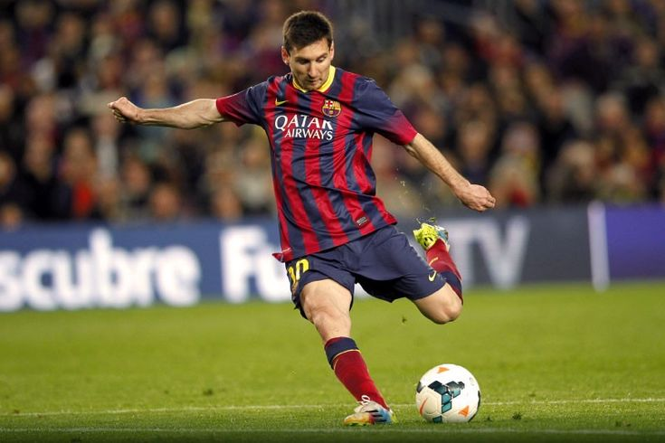
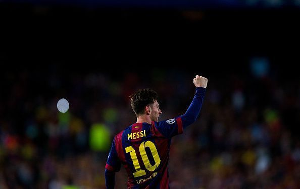
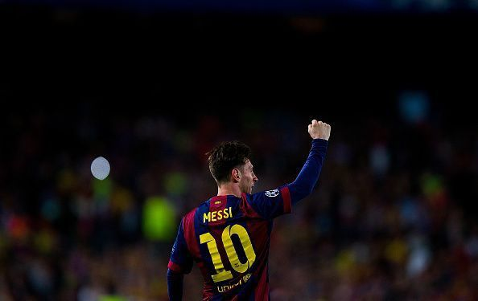
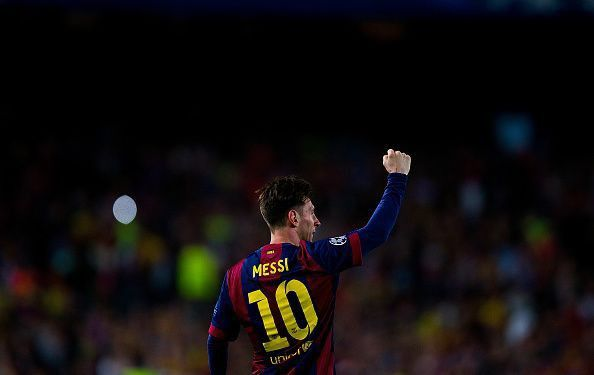

Tentang Lionel Messi
Lionel Messi adalah pemain sepak bola asal Argentina yang dianggap salah satu terbaik sepanjang masa, dikenal karena visi, dribel, dan kemampuannya mencetak serta menciptakan gol; ia meraih kesuksesan luar biasa bersama Barcelona, PSG, Inter Miami, dan timnas Argentina, termasuk juara Piala Dunia, Copa América, serta pemegang Ballon d’Or terbanyak (8 kali) dalam sejarah.
G.O.A.T

 

